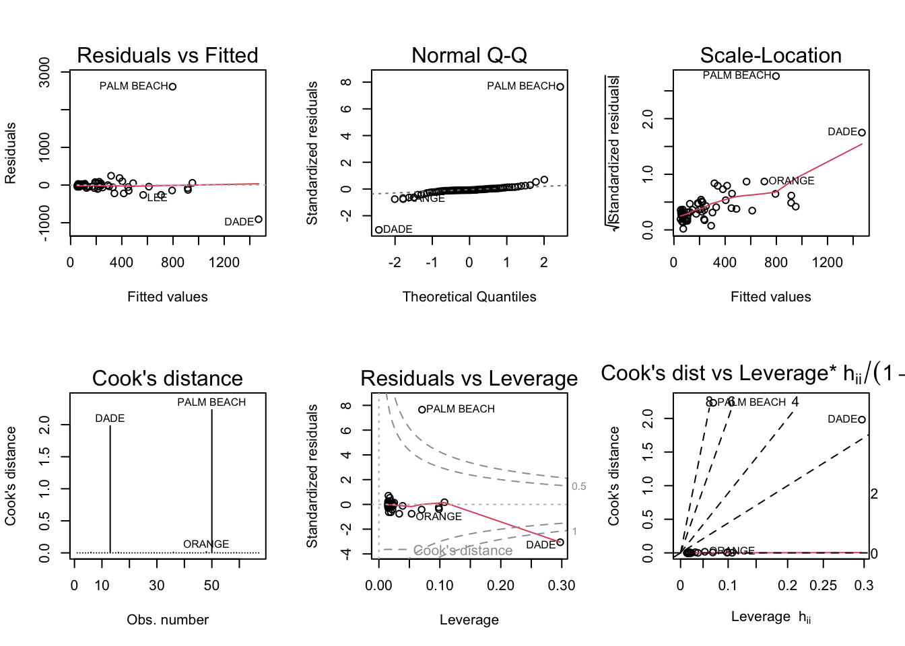

Code
knitr::opts_chunk$set(echo = TRUE, warning = FALSE, message = FALSE)knitr::opts_chunk$set(echo = TRUE, warning = FALSE, message = FALSE)library("alr4")
library("smss")
library("ggplot2")
library("tidyverse")
library("vtable")Based on the tables provided, the variable that would be eliminated first is “Beds”. This is because “Beds” has the highest p value (p = 0.487), which is not significant, when compared to the other variables in the model.
Based on the tables provided, the variable we would start with “Size”, because it has the highest correlation to price in the correlation matrix. I am using the correlation matrix table instead of the regression output because with forward selection you start with no explanatory variable.
A high P value along with a high correlation coefficient could indicate the issue of multicolinearity. Beds could be multicolinear with another variable in the dataset (ex: baths or size), which is making the correlation coefficient so high, however when you see the results of the model you see that beds may not actually be as significant as the other two variables.
data(house.selling.price.2)
#head(house.selling.price.2)
Reg1<-lm(P ~ S + Be + Ba + New, data = house.selling.price.2)
summary(Reg1)
Call:
lm(formula = P ~ S + Be + Ba + New, data = house.selling.price.2)
Residuals:
Min 1Q Median 3Q Max
-36.212 -9.546 1.277 9.406 71.953
Coefficients:
Estimate Std. Error t value Pr(>|t|)
(Intercept) -41.795 12.104 -3.453 0.000855 ***
S 64.761 5.630 11.504 < 2e-16 ***
Be -2.766 3.960 -0.698 0.486763
Ba 19.203 5.650 3.399 0.001019 **
New 18.984 3.873 4.902 4.3e-06 ***
---
Signif. codes: 0 '***' 0.001 '**' 0.01 '*' 0.05 '.' 0.1 ' ' 1
Residual standard error: 16.36 on 88 degrees of freedom
Multiple R-squared: 0.8689, Adjusted R-squared: 0.8629
F-statistic: 145.8 on 4 and 88 DF, p-value: < 2.2e-16Reg2<-lm(P ~ S + Ba + New, data = house.selling.price.2)
summary(Reg2)
Call:
lm(formula = P ~ S + Ba + New, data = house.selling.price.2)
Residuals:
Min 1Q Median 3Q Max
-34.804 -9.496 0.917 7.931 73.338
Coefficients:
Estimate Std. Error t value Pr(>|t|)
(Intercept) -47.992 8.209 -5.847 8.15e-08 ***
S 62.263 4.335 14.363 < 2e-16 ***
Ba 20.072 5.495 3.653 0.000438 ***
New 18.371 3.761 4.885 4.54e-06 ***
---
Signif. codes: 0 '***' 0.001 '**' 0.01 '*' 0.05 '.' 0.1 ' ' 1
Residual standard error: 16.31 on 89 degrees of freedom
Multiple R-squared: 0.8681, Adjusted R-squared: 0.8637
F-statistic: 195.3 on 3 and 89 DF, p-value: < 2.2e-16#fitted(Reg1)
n5.1<- 93
RSS5.1<-deviance(Reg1)
Reg1AIC<-n5.1*log(RSS5.1/n5.1) + 2*4
print(Reg1AIC)[1] 522.7#522.7
Reg1BIC<-(n5.1*log(RSS5.1/n5.1)) + (log(n5.1)*4)
print(Reg1BIC)[1] 532.8304#532.8304
prReg1 <- resid(Reg1)/(1 - lm.influence(Reg1)$hat)
sum(prReg1^2)[1] 28390.22#28390.22
n5.2<-93
RSS5.2<-deviance(Reg2)
Reg2AIC<-n5.2*log(RSS5.2/n5.2) + 2*3
print(Reg2AIC)[1] 521.214#521.214
Reg2BIC<-(n5.2*log(RSS5.2/n5.2)) + (log(n5.2)*3)
print(Reg2BIC)[1] 528.8118#528.8118
prReg2 <- resid(Reg2)/(1 - lm.influence(Reg2)$hat)
sum(prReg2^2)[1] 27860.05#27860.05
Model<- c('Model1', 'Model2')
R_Squared<-c(0.8689, 0.8681)
Adjusted_R_Squared<-c(0.8629, 0.8637)
PRESS<-c(28390.22, 27860.05)
AIC<-c(522.7, 521.21)
BIC<-c(532.83, 528.82)
Model_Comparison<-data.frame(Model, R_Squared, Adjusted_R_Squared, PRESS, AIC, BIC)
kable(Model_Comparison)| Model | R_Squared | Adjusted_R_Squared | PRESS | AIC | BIC |
|---|---|---|---|---|---|
| Model1 | 0.8689 | 0.8629 | 28390.22 | 522.70 | 532.83 |
| Model2 | 0.8681 | 0.8637 | 27860.05 | 521.21 | 528.82 |
According to the table output I prefer Model 1. Model 1 has a higher R-Squared, Adjusted R-Squared, PRESS, AIC, and BIC. This means, across the board, Model 1 is stronger than Model 2.
data(trees)
#head(trees)
Reg5.2<-lm(Volume ~ Girth + Height, data = trees)
summary(Reg5.2)
Call:
lm(formula = Volume ~ Girth + Height, data = trees)
Residuals:
Min 1Q Median 3Q Max
-6.4065 -2.6493 -0.2876 2.2003 8.4847
Coefficients:
Estimate Std. Error t value Pr(>|t|)
(Intercept) -57.9877 8.6382 -6.713 2.75e-07 ***
Girth 4.7082 0.2643 17.816 < 2e-16 ***
Height 0.3393 0.1302 2.607 0.0145 *
---
Signif. codes: 0 '***' 0.001 '**' 0.01 '*' 0.05 '.' 0.1 ' ' 1
Residual standard error: 3.882 on 28 degrees of freedom
Multiple R-squared: 0.948, Adjusted R-squared: 0.9442
F-statistic: 255 on 2 and 28 DF, p-value: < 2.2e-16par(mfrow = c(2,3))
plot(Reg5.2, which = 1:6)
According to the diagnostic plots above:
Residuals vs Fitted.
The line in this diagnostic test is not straight, this shows the analysis violating the assumption of linearity. This also indicates a violation in the assumption of a constant variance.
QQ-Plot.
The results of the QQ Plot indicate the passing of the normality assumption. This is shown with the points falling along the line.
Scale-Location.
The scale-location plot is another indicator that the analysis has violated the assumption of the constant variance. The curved line resulting from this diagnostic test indicates that the model has not passed this assumption.
Cook’s Distance.
The results of this show that cook’s distance remains under 1, this indicates passing the assumption of influential observation.
Residuals vs Leverage.
The results of this diagnostic show no points within the same area as the dashed lines. This is a further indicator that the analysis passed the assumption of influential observation. We can assume that there is not one observation that is particularly more influential than another.
Cook’s Distance vs Leverage.
The results of this diagnostic plot show that the model is within a healthy area of under 1 for cooks distance (y axis) however, is has not remained below o.167 for leverage (x axis).
data(florida)
#head(florida)
Reg5.3<-lm(Buchanan ~ Bush, data = florida)
summary(Reg5.3)
Call:
lm(formula = Buchanan ~ Bush, data = florida)
Residuals:
Min 1Q Median 3Q Max
-907.50 -46.10 -29.19 12.26 2610.19
Coefficients:
Estimate Std. Error t value Pr(>|t|)
(Intercept) 4.529e+01 5.448e+01 0.831 0.409
Bush 4.917e-03 7.644e-04 6.432 1.73e-08 ***
---
Signif. codes: 0 '***' 0.001 '**' 0.01 '*' 0.05 '.' 0.1 ' ' 1
Residual standard error: 353.9 on 65 degrees of freedom
Multiple R-squared: 0.3889, Adjusted R-squared: 0.3795
F-statistic: 41.37 on 1 and 65 DF, p-value: 1.727e-08par(mfrow = c(2,3))
plot(Reg5.2, which = 1:6)
par(mfrow = c(2,3))
plot(Reg5.3, which = 1:6)
Both Cook’s Distance and Residuals vs Leverage show the results of the assumption of influential observations. According to the diagnostic plots above:
Cook’s Distance.
The results of this show that cook’s distance remains well over 1 (a value of 2) for Dade and Palm Beach. This does indicate that Palm Beach County is an outlier that could be influencing the model.
Residuals vs Leverage.
The results of this diagnostic show that both Palm Beach and Dade are outside of the dashed lines. This is a further indicator that the analysis has not passed the assumption of influential observation. We can assume that Palm Beach is an influential observation.
Reg5.3b<-lm(log(Buchanan) ~ log(Bush), data = florida)
summary(Reg5.3b)
Call:
lm(formula = log(Buchanan) ~ log(Bush), data = florida)
Residuals:
Min 1Q Median 3Q Max
-0.96075 -0.25949 0.01282 0.23826 1.66564
Coefficients:
Estimate Std. Error t value Pr(>|t|)
(Intercept) -2.57712 0.38919 -6.622 8.04e-09 ***
log(Bush) 0.75772 0.03936 19.251 < 2e-16 ***
---
Signif. codes: 0 '***' 0.001 '**' 0.01 '*' 0.05 '.' 0.1 ' ' 1
Residual standard error: 0.4673 on 65 degrees of freedom
Multiple R-squared: 0.8508, Adjusted R-squared: 0.8485
F-statistic: 370.6 on 1 and 65 DF, p-value: < 2.2e-16par(mfrow = c(2,3))
plot(Reg5.3b, which = 1:6)
After taking the log of both Buchanan and Bush the model now passes the assumption of influential observation. We can see that Cooks Distance is below 1 for Palm Beach and Palm Beach is now within the healthy area of observeration is the Residuals vs Leverage Plot.